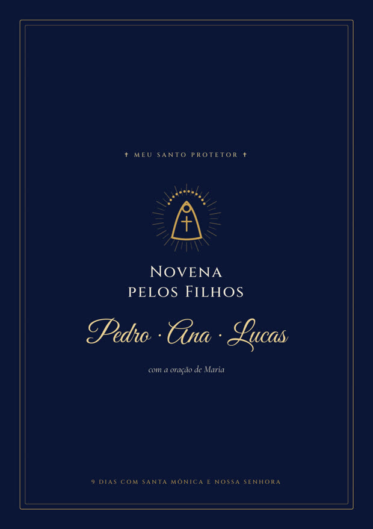
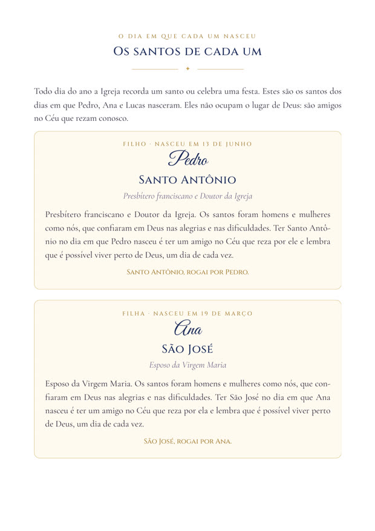
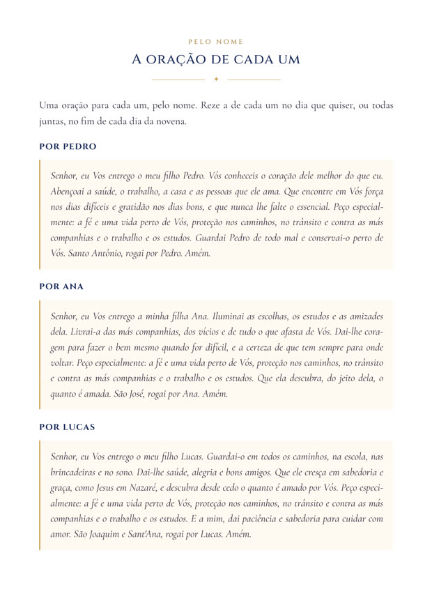
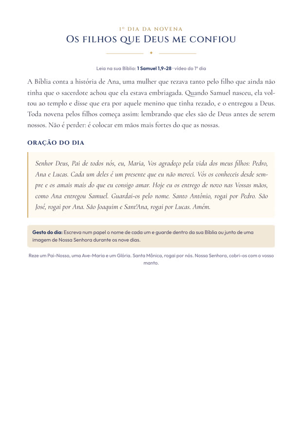
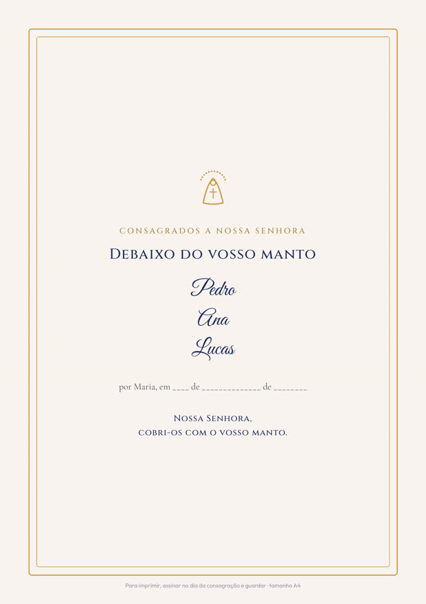
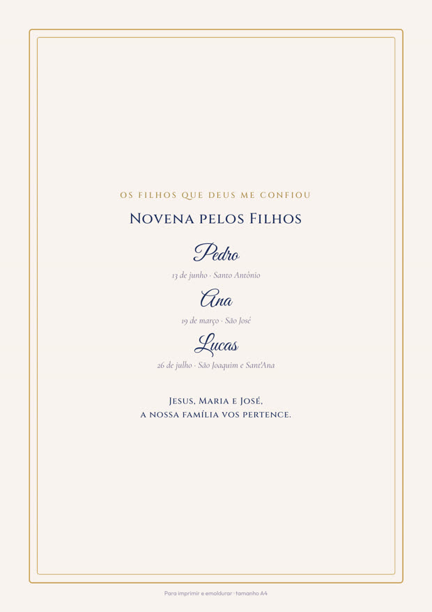

Descubra, de graça, o santo do dia em que cada filho (ou neto) nasceu, e reze por cada um pelo nome.
Procurando no calendário dos santos…
Nove vídeos curtos, um por dia, para você rezar junto, e um livro com o nome e o santo de cada um.
Cada dia tem um vídeo de poucos minutos, narrado, com a leitura, a reflexão e a oração. Você aperta o play e reza junto.






Páginas de um livro de exemplo (Pedro, Ana e Lucas). O seu sai com os nomes, as datas e os santos de quem você escreveu.
Logo depois do pagamento, a página da sua novena abre aqui mesmo, e tudo chega também no seu e-mail.
Material devocional católico do Meu Santo Protetor. Não somos uma paróquia: nada substitui a missa, os sacramentos e a orientação do padre. Os santos intercedem por nós; quem concede as graças é Deus.
Assim que o pagamento é aprovado (no Pix é na hora), a novena é preparada com os nomes que você escreveu. Em poucos minutos, a página da sua novena abre aqui, com os 9 vídeos e o livro em PDF para baixar. O link também chega no seu e-mail, junto com o livro.
Não. É só abrir o link e apertar o play do dia. Se preferir, reze só pelo livro: cada dia traz a leitura, a reflexão e a oração escritas, com os nomes.
Uns dez minutos. Os vídeos são curtos, e você pode rezar no horário que der: de manhã, depois do almoço, antes de dormir. Perdeu um dia? Continue de onde parou.
Serve para filhos e netos de qualquer idade, de bebês a adultos com a própria família. As orações de cada um são escritas de acordo com a idade, quando você informa o ano em que nasceu.
A novena tem um dia inteiro para quem está longe (o 6º dia, com a parábola do filho pródigo), além da história de Santa Mônica, que rezou anos pelo filho. Não prometemos resultado: a novena é para você rezar com constância e confiança. Quem toca os corações é Deus.
Pode. Marque "já partiu para junto de Deus" no quiz. Ele aparece com o santo do dia em que nasceu e com uma oração pelo descanso eterno, e é lembrado com carinho em cada dia da novena.
Pode. O livro está em A4 e traz o certificado da consagração a Nossa Senhora e um quadro com os nomes para emoldurar.
Somos o Meu Santo Protetor, uma equipe que prepara material devocional católico. Não somos uma paróquia e nada substitui a missa, os sacramentos e a orientação do padre. O narrador dos vídeos é da nossa equipe, não é padre. A novena segue a fé católica: os santos rezam por nós e quem concede as graças é Deus.